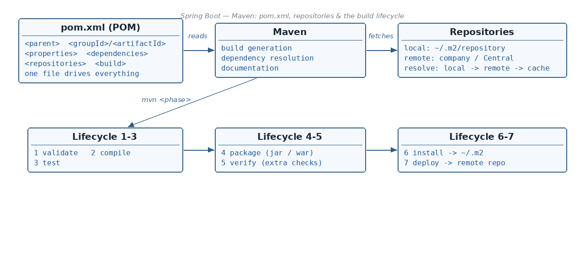

<dependencyManagement> vs <dependencies>
☕ 8 min read · 🎬 Video walkthrough · 📊 UML diagram · 💻 Runnable code
⚡ In a nutshell — What Maven is and what it does for developers · The anatomy of pom.xml: parent, properties, dependencies, repositories, build · The 7 phases of the Maven build lifecycle — and the mvn command for each · How local and remote repositories work, and the dependency resolution order
pom.xml in the current directory and reads the needed configuration from it.With ANT you had to tell the tool both what to do and how to do it. With Maven we just say what to do — how to do it, Maven will take care of.

<?xml version="1.0" encoding="UTF-8"?>
<project xmlns="http://maven.apache.org/POM/4.0.0"
xmlns:xsi="http://www.w3.org/2001/XMLSchema-instance"
xsi:schemaLocation="http://maven.apache.org/POM/4.0.0
http://maven.apache.org/xsd/maven-4.0.0.xsd">
<parent>
<groupId>org.springframework.boot</groupId>
<artifactId>spring-boot-starter-parent</artifactId>
<version>3.2.5</version>
</parent>
<groupId>com.example</groupId>
<artifactId>my-app</artifactId>
<version>1.0.0</version>
<properties>
<java.version>17</java.version>
</properties>
<dependencies>
<dependency>
<groupId>org.springframework.boot</groupId>
<artifactId>spring-boot-starter-web</artifactId>
</dependency>
</dependencies>
<repositories>
<repository>
<id>company-repo</id>
<url>https://repo.mycompany.com/maven2</url>
</repository>
</repositories>
</project>
<parent> — used to define the parent project. The current project inherits the configuration from the specified parent project — which in turn might be the super POM.<groupId> / <artifactId> — together the unique identifier of your project.<properties> — defines key-value pairs for configuration. They can be referenced throughout the XML file, e.g. ${java.version}.<dependencies> — this is where we declare the dependencies that our project relies on.<repositories> — this is from where Maven looks for project dependencies and downloads the artifact (jar).Note: if
<parent>is not specified, Maven by default inherits the configuration from the super POM.Added: transitive dependencies — you declare only
spring-boot-starter-web; Maven automatically pulls in everything it depends on (Tomcat, Jackson, spring-web, …). Runmvn dependency:treeto see the full tree and find where a jar came from.Added: dependency scopes control where a dependency is available —
compile(default, everywhere),provided(compile only; the server provides it at runtime, e.g. servlet-api),runtime(not needed to compile, needed to run, e.g. a JDBC driver),test(only for tests, e.g. JUnit),import(for importing a BOM in<dependencyManagement>).Added: a top interview question.
<dependencies>adds a jar to your project.<dependencyManagement>adds nothing — it only declares the version to use IF someone adds that dependency. This is how the Spring Boot parent lets you omit<version>tags: it manages hundreds of versions centrally, and your<dependency>entry picks them up.
<!-- Parent POM: pins versions ONCE for all modules — downloads nothing by itself -->
<dependencyManagement>
<dependencies>
<dependency>
<groupId>com.fasterxml.jackson.core</groupId>
<artifactId>jackson-databind</artifactId>
<version>2.17.1</version>
</dependency>
</dependencies>
</dependencyManagement>
<!-- Child module: actually USES it — no version needed, the managed one applies -->
<dependencies>
<dependency>
<groupId>com.fasterxml.jackson.core</groupId>
<artifactId>jackson-databind</artifactId>
</dependency>
</dependencies>
Added: when two dependencies pull in different versions of the same jar, Maven uses "nearest wins" mediation: the version closest to your project in the dependency tree is chosen; on a tie (same depth), the one declared first in
pom.xmlwins. It does not automatically pick the newest. Diagnose withmvn dependency:tree, then either declare the version you want directly (making it "nearest") or exclude the unwanted transitive:
<dependency>
<groupId>org.example</groupId>
<artifactId>some-library</artifactId>
<version>2.0</version>
<exclusions>
<exclusion> <!-- drop the transitive jar it drags in -->
<groupId>commons-logging</groupId>
<artifactId>commons-logging</artifactId>
</exclusion>
</exclusions>
</dependency>
Added:
1.0.0-SNAPSHOTmeans "still in development" — Maven re-checks the remote repository for a newer build of the same snapshot version (by default daily). A plain1.0.0release is immutable: once downloaded, Maven never re-fetches it, and a repository never lets you re-deploy the same release version. Rule: depend on SNAPSHOTs only between your own in-development modules — never ship a release that depends on a SNAPSHOT.
The default lifecycle is a fixed chain of 7 phases:
Two rules to remember:
<build> elementIf you want a task 5 in the install phase, how could you do it? Through the <build> element.
<build> element helps you add a new task (goal) inside any of the 7 phases.<build> element: add the goal to the specified phase (see the PMD plugin example in section 5).mvn validate — validates the project structure.mvn compile — it will validate and compile your code and put the result under ${project.basedir}/target/classes. You only give the command — Maven looks for pom.xml and does the how by itself.mvn test — it will validate, compile and then run the test cases in our project.mvn package — first completes the validate, compile and test phases, and then runs the package phase, in which it generates the jar or war file.mvn verify — it can perform some additional checks apart from unit test cases, like:
- static code analysis
- checksum verification etc.mvn install — it will install the jar package in the local Maven repository, which is typically located in your user home directory: ~/.m2/repository.mvn deploy — it will deploy the .jar to the remote repository.Added:
mvn clean— deletes the wholetarget/folder so the next build starts fresh. It belongs to a separate lifecycle (clean), which is why the most common everyday command combines both:mvn clean package(ormvn clean install).
The plugin is attached to the verify phase through the <build> element — this is exactly the "add a goal to a phase" mechanism from section 4:
<build>
<plugins>
<plugin>
<groupId>org.apache.maven.plugins</groupId>
<artifactId>maven-pmd-plugin</artifactId>
<version>3.2.1</version>
<executions>
<execution>
<id>pmd-analysis</id>
<phase>verify</phase>
<goals>
<goal>pmd</goal>
</goals>
</execution>
</executions>
</plugin>
</plugins>
</build>
~/.m2/repository); mvn install puts your jar here.In the settings.xml file you can change the path of the local repository (and configure servers, mirrors, proxies).
mvn deploy needs to know where to upload. That goes in pom.xml under <distributionManagement>:
<project>
<distributionManagement>
<repository>
<id>x</id>
<url>y</url>
</repository>
</distributionManagement>
</project>
The credentials for that repository (matched by the same id) go in settings.xml:
<settings>
<servers>
<server>
<id>x</id>
<username>deploy-user</username>
<password>deploy-password</password>
</server>
</servers>
</settings>
Good to know: keep credentials in
settings.xml(per machine, not committed to git) and only the repository URL inpom.xml— that is exactly why Maven splits the configuration across the two files.
mvnw, .mvn/) — every machine and CI builds with the same Maven version.<dependencyManagement> (importing BOMs like spring-boot-dependencies) pins versions once for all modules — the cure for version drift.mvn -B -ntp verify (batch mode, no transfer progress); fail the build on PMD/SpotBugs/Checkstyle in the verify phase, exactly like the notes' PMD binding.dependency:tree is your first tool for version conflicts; <exclusions> your second.pom.xml).<parent> (inherit config; default = super POM), <groupId>/<artifactId> (unique id), <properties> (key-value pairs), <dependencies>, <repositories>.<build> element (e.g. the PMD plugin on verify).mvn install → jar into ~/.m2/repository (local); mvn deploy → jar into the remote repo (<distributionManagement> + <servers> in settings.xml).<dependencyManagement> pins versions without adding jars; <dependencies> actually adds them.<exclusions>.-SNAPSHOT = mutable, re-fetched dev build; a release version is immutable and cached forever.Next topic: Spring MVC and REST Annotations — @Controller, @RestController, and how request data is bound.
👏 Found this useful? Give it a few claps so more developers discover it, and follow for the whole series — every article ships with a UML diagram, runnable code, a narrated video, and a companion PDF. Happy building! 🚀